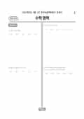

문제지

전국연합학력평가 · 시·도교육청 주관
2022년 9월 고2 학력평가 수학 1등급컷은 원점수 84점(추정), 표준점수 최고점은 153점입니다.
원점수 1등급컷은 공식 발표값이 아니라 EBSi·입시기관 값입니다. 등급별 값은 등급컷 표, 출처 구분은 데이터 원칙에 있습니다.

시험지를 먼저 풀어 보세요. 등급컷·표준점수·난이도는 흐리게 가려 뒀어요.
| 등급 | 원점수 | 표준점수 | 백분위 |
|---|---|---|---|
| 1 | 84 | 139 | 96 |
| 2 | 72 | 129 | 88 |
| 3 | 58 | 117 | 77 |
| 4 | 40 | 102 | 60 |
| 5 | 24 | 89 | 41 |
| 6 | 16 | 82 | 22 |
| 7 | 13 | 80 | 14 |
| 8 | 9 | 76 | 4 |
등급별 컷 · EBSi 원점수 추정 · 만점 100점
| 등급 | 표준점수 이상 | 인원(명) | 비율 |
|---|---|---|---|
| 1 | 139 | 10,056 | 4.56% |
| 2 | 129 | 17,883 | 8.11% |
| 3 | 117 | 24,884 | 11.28% |
| 4 | 102 | 35,762 | 16.21% |
| 5 | 89 | 43,825 | 19.87% |
| 6 | 82 | 46,530 | 21.09% |
| 7 | 80 | 17,438 | 7.9% |
| 8 | 76 | 16,664 | 7.55% |
| 9 | 69 | 7,555 | 3.42% |
시·도교육청 공개 자료
출처: 시·도교육청이 공개한 전국연합학력평가 성적 분석·통계자료(공개 자료 보기).
발행 기관: 시·도교육청(전국연합학력평가). 파일 위치: 이 사이트가 보관한 사본. 저작권은 발행 기관에 있습니다. 원본과 다르거나 게시 중단이 필요하면 연락처로 알려 주세요. 등급컷 출처 구분은 데이터 원칙에서 설명합니다.
막대 색은 역대 대비 난이도 · 진한 막대가 이 시험 · 막대를 누르면 그 회차로 이동
| 회차 | 1등급컷 | 표점 최고 | 1등급 표점 | 난이도 |
|---|---|---|---|---|
| 9월 학평2022년 고2이 시험 | 84 | 153 | 139 | 어려움 |
| 6월 학평2022년 고2 | 84 | 148 | 135 | 매우 쉬움 |
| 3월 학평2022년 고2 | 85 | 151 | 138 | 쉬움 |
| 11월 학평2021년 고2 | 84 | 152 | 139 | 어려움 |
| 6월 학평2021년 고2 | 80 | 152 | 134 | 쉬움 |
| 3월 학평2021년 고2 | 89 | 147 | 138 | 매우 쉬움 |
수학은 교육청 채점 결과 1등급 구분 표준점수가 139점, 최고점이 153점이었고 최고점자가 95명이었습니다. 6월(1등급 135점, 최고점 148점, 475명)보다 1등급 컷이 4점, 최고점이 5점 올랐습니다.
주관식 뒷번호는 자연수와 상수로 정한 거듭제곱근 가운데 실수인 것의 개수(28번), 양수와 0이 아닌 실수로 정의한 두 함수(29번), 짝수·홀수에 따라 규칙이 달라지는 수열(30번)을 다뤘습니다.
28번의 거듭제곱근 문항은 n이 홀수면 실수 a의 n제곱근 가운데 실수는 하나, n이 짝수면 a > 0일 때 둘(±), a = 0일 때 하나, a < 0일 때 없다는 규칙으로 경우를 나눕니다.
30번처럼 항이 짝수인지 홀수인지에 따라 다음 항의 규칙이 달라지는 수열은 첫째항부터 차례로 몇 항을 직접 계산해 규칙이 반복되는 구간을 찾는 것이 가장 확실합니다.